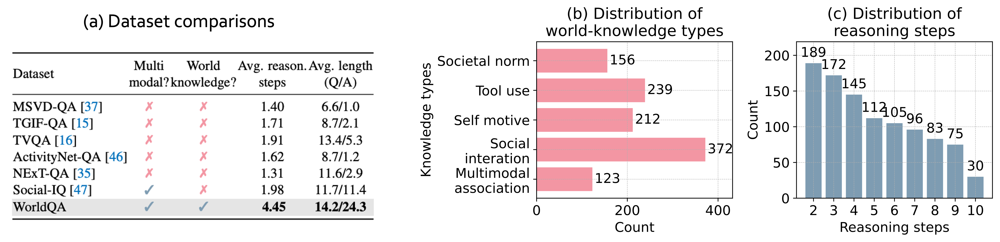
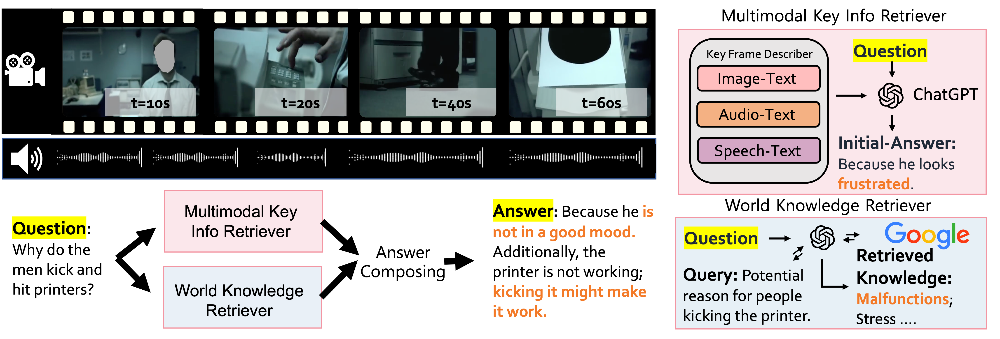

Abstract
Multimodal information, together with our knowledge, help us to understand the complex and dynamic world. Large language models (LLM) and large multimodal models (LMM), however, still struggle to emulate this capability. In this paper, we present WorldQA, a video understanding dataset designed to push the boundaries of multimodal world models with three appealing properties: (1) Multimodal Inputs: The dataset comprises 1007 question-answer pairs and 303 videos, necessitating the analysis of both auditory and visual data for successful interpretation. (2) World Knowledge: We identify five essential types of world knowledge for question formulation. This approach challenges models to extend their capabilities beyond mere perception. (3) Long-Chain Reasoning:Our dataset introduces an average reasoning step of 4.45, notably surpassing other videoQA datasets. Furthermore, we introduce WorldRetriever, an agent designed to synthesize expert knowledge into a coherent reasoning chain, thereby facilitating accurate responses to WorldQA queries. Extensive evaluations of 13 prominent LLMs and LMMs reveal that WorldRetriever, although being the most effective model, achieved only 70% of humanlevel performance in multiple-choice questions. This finding highlights the necessity for further advancement in the reasoning and comprehension abilities of models. Our experiments also yield several key insights. For instance, while humans tend to perform better with increased frames, current LMMs, including WorldRetriever, show diminished performance under similar conditions. We hope that WorldQA,our methodology, and these insights could contribute to the future development of multimodal world models.
Video
WorldQA

WorldQA presents significant advancements over existing datasets, as (a) illustrates. Firstly, it requires complex multi-step reasoning. Using GPT4, we evaluated the reasoning steps in each question-answer pair across datasets; WorldQA averages 4.45 steps, notably higher than others which typically involve less than two steps. This complexity is also evident in answer lengths: while answers in other VideoQA datasets average below five words, those in WorldQA average 24.3 words. Secondly, it necessitates more than visual information for success. WorldQA encompasses audio comprehension and world knowledge, expanding its scope beyond mere video visuals for effective question resolution. To our knowledge, it represents the first VideoQA dataset that incorporates questions necessitating world knowledge.
WorldRetriever

we introduce WorldRetriver, a method that leverages LLM-as-agent for complex long-chain reasoning. As depicted in Fig. 1, human long-chain reasoning involves gathering information from various sensors and integrating world knowledge to reach a conclusion. WorldRetriver mimics this approach by using expert models for individual sub-tasks. These models perform specific functions, and then WorldRetriver combines their outputs with the original question to formulate the final answer.
Paper

WorldQA: Multimodal World Knowledge in Videos through Long-Chain Reasoning
Yuanhan Zhang, Kaichen Zhang, Bo Li, Fanyi Pu, Christopher Arif Setiadharma, Jingkang Yang, Ziwei Liu
arXiv, 2024.
@InProceedings{zhang2024WorldQA,
title = {WorldQA: Multimodal World Knowledge in Videos through Long-Chain Reasoning},
author = {Yuanhan Zhang, Kaichen Zhang, Bo Li, Fanyi Pu, Christopher Arif Setiadharma, Jingkang Yang and Ziwei Liu},
archivePrefix={arXiv},
year = {2024},
}